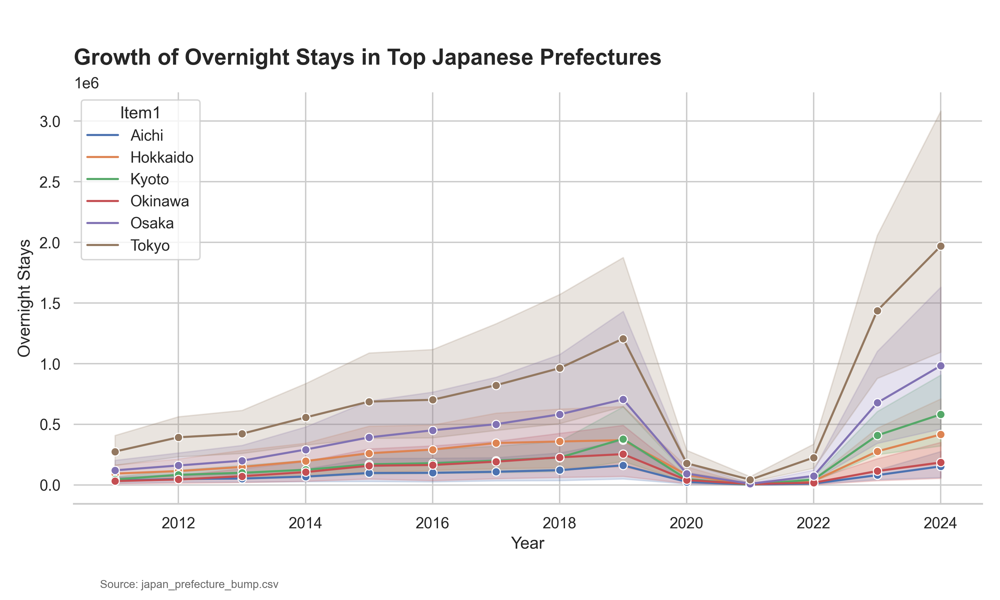

Regional Tourism Growth in Japan
Aichi Prefecture maintains a steady presence among Japan's top tourism hubs, reflecting its enduring appeal for overnight visitors.

Key Insights
- Consistent Top Tier: Aichi consistently ranks alongside major regions, showing resilience in attracting visitors despite fluctuations in the broader tourism market.
- Post-2015 Surge: Many top prefectures experienced a noticeable uptick in overnight stays between 2015 and 2019, aligned with national tourism expansion efforts.
- Regional Competition: While Aichi shows steady growth, other prefectures exhibit more volatile peaks, suggesting different tourism drivers (e.g., seasonal events vs. business travel).